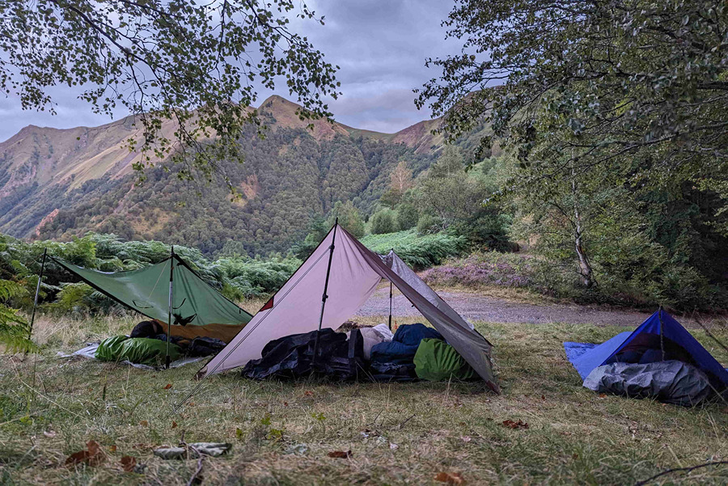
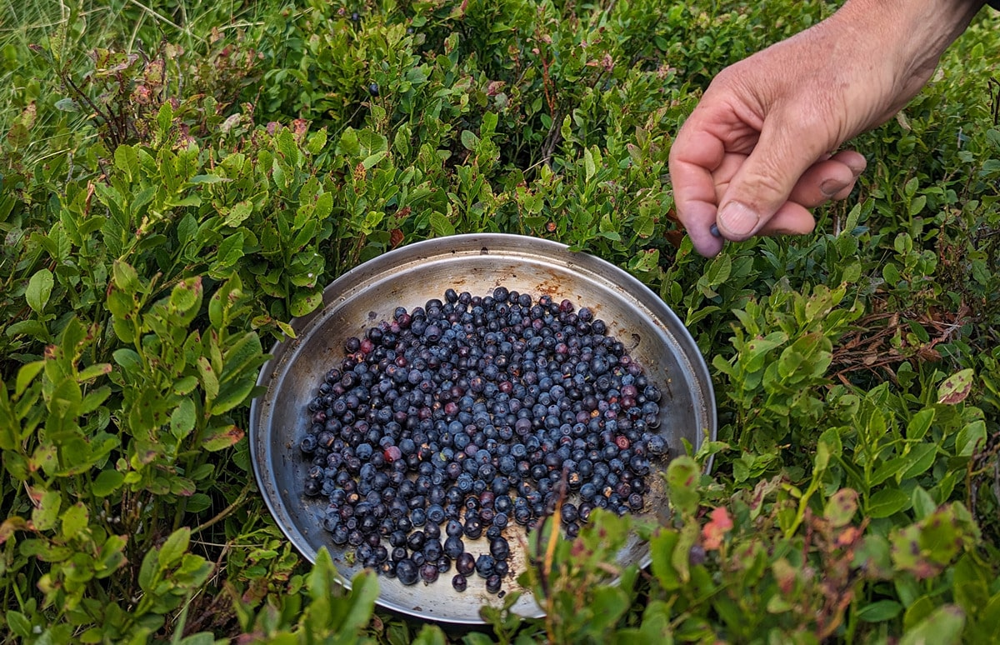
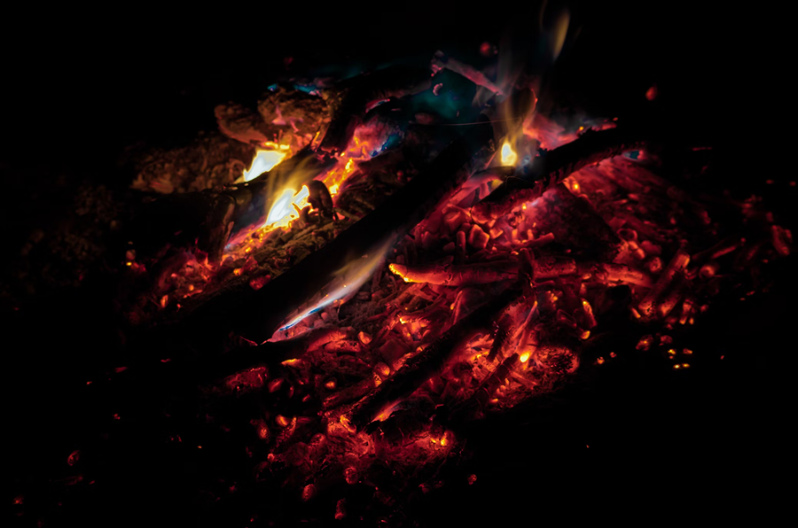
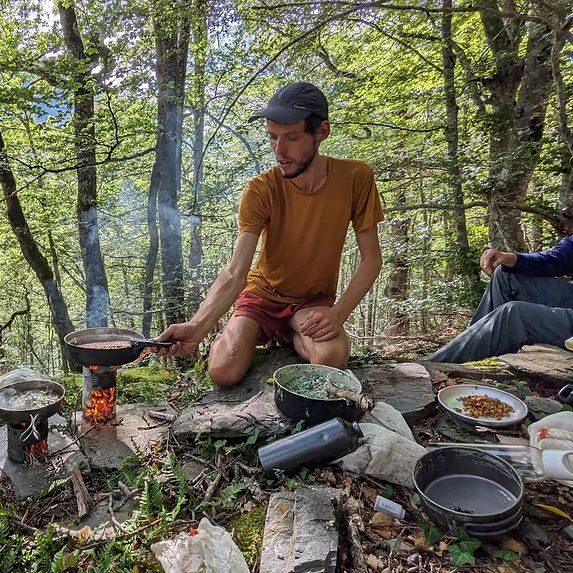
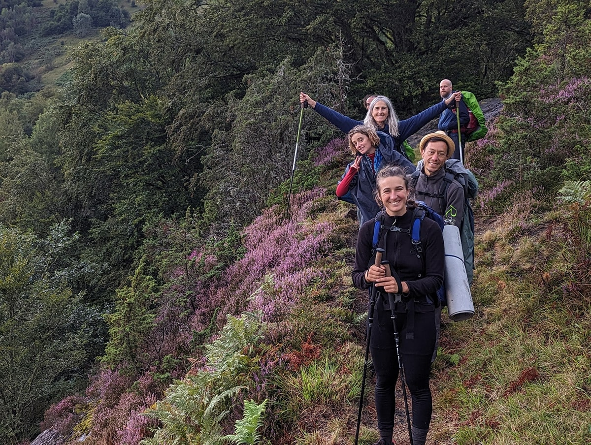
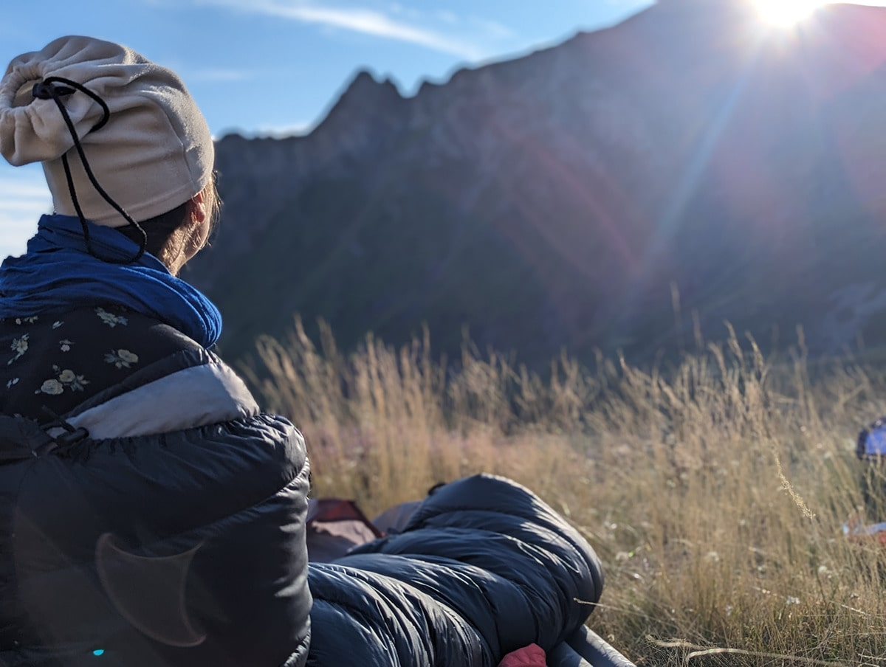
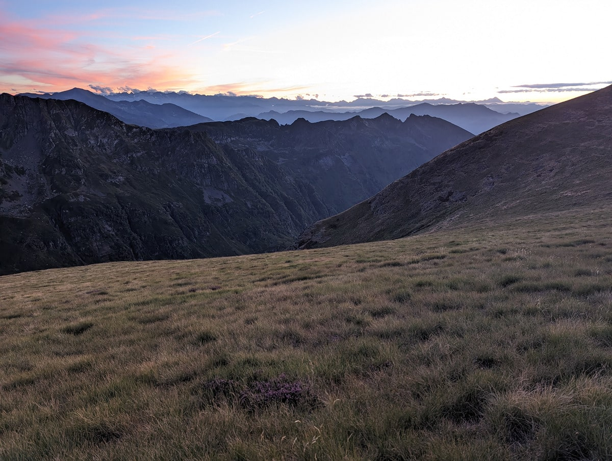
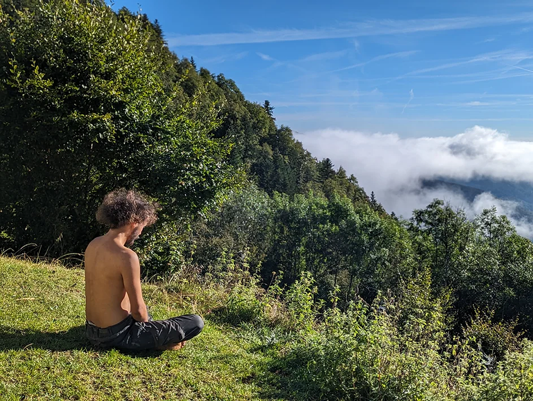

---
layout: default
title: Stage survie douce - Marche et cueille
--- 

<div id="page-stage-survie-douce" class="container-xxl py-5">
    <section style="height: 80px;margin-top: -80px;"></section>

    <div id="modalites-inscription" class="container-md">
        {% for item in site.data.les-stages.survie-douce-six-jours %}
        <div class="text-center mx-auto wow fadeInUp mb-4" data-wow-delay="0.1s" style="max-width: 800px;">
            <h1 class="mb-4">{{ item.titre }}</h1>
            <p class="section-title bg-white text-center text-primary px-3 mb-4">{{ item.soustitre }}</p>
        </div>
        <div class="row g-5 align-items-center mb-5">
            <div class="col-12 col-md-7 offset-md-1 wow fadeInUp" data-wow-delay="0.1s">
                <p class="info-bulle bg-primary">{{ item.nombre-personnes }}</p>
                <p class="info-bulle bg-secondary">{{ item.prix }}</p>
                <br>
                <small class=" fst-italic">{{ item.info-prix }}</small>
                <p class="mt-3">{{ item.description }}</p>
            </div>
            <div class="col-8 offset-2 col-md-4 offset-md-0 col-lg-3 offset-lg-1 wow fadeInUp text-center" data-wow-delay="0.1s">
                <div class="stage-inscription-bulle">
                    <p>Pour vous inscrire, il vous suffit de remplir le formulaire en cliquant sur le bouton ci-dessous</p>
                    <p class="fleche-bas">↓</p>
                    <a href="/s-inscrire#formulaire-inscription" class="lien-inscription-accueil bg-secondary">Cliquez pour vous inscrire</a>
                </div>
            </div>
            <!--<div class="text-center col-12 col-md-4 wow fadeInUp" data-wow-delay="0.1s">
                {% for data in item.prix %}
                <p class="text-center lien-inscription-accueil bg-primary">Prix du stage : {{data.type}} - {{ data.montant }} € *</p>
                <small>*Possibilité de réduction pour les budgets modestes.</small>
                <a href="" class="lien-inscription-accueil bg-secondary">Cliquez pour vous inscrire</a>-->
                {% endfor %}
                <!--<ul>
                    {% for data in item.prix %}
                        <li>{{data.type}} - {{ data.montant }} €</li>
                    {% endfor %}
                </ul>-->
            
            <div class="col-12 col-md-10 offset-md-1 text-center">
                <table class="table table-bordered">
                    <thead>
                        <tr>
                            <th colspan="4" class="table-dark text-center">Date et Lieu des stages</th>
                        </tr>
                        <tr class="table-active">
                            <th>Date</th>
                            <th>Lieu</th>
                            <th>Description</th>
                        </tr>
                    </thead>
                    <tbody>
                        {% for entry in item.details %}
                        <tr>
                            <td>{{entry.date}}</td>
                            <td>{{entry.lieu}}</td>
                            <td>{{entry.description}}</td>
                        </tr>
                        {% endfor %}
                    </tbody>
                </table>
            </div>
        </div>
        {% endfor %}
    </div>

    <!-- Liste matériel -->
    <div class="container-xxl py-5">
        <div id="le-materiel" class="container">
            <div class="text-center mx-auto wow fadeInUp mb-4" data-wow-delay="0.1s" style="max-width: 800px;">
                <h2 class="mb-4">Liste de Matériels pour le stage</h2>
                <p class="section-title bg-white text-center text-primary px-3 mb-4"></p>
            </div>
            <div class="row g-5">
                <div class="col-md-10 offset-md-1 wow fadeInUp text-center" data-wow-delay="0.1s">
                    <p class="mb-4"><strong>&rarr; Les tarps (bâche de randonnée), cordages, matériels de cuisine, farines
                            et huiles, trousses de secours seront fournis.</strong></p>
                    <p><strong>&rarr; Un temps sera pris avant le départ pour réorganiser nos sacs et se répartir le
                            matériel commun.</strong></p>
                </div>
                <div class="col-md-6 wow fadeInUp" data-wow-delay="0.1s">
                    <h3>À prévoir avec vous :</h3>
                    <ul>
                        <li>
                            <p><strong>Un sac à dos entre 40 et 60 litres</strong> (pas trop lourd dans l'idéal, entre 1 et
                                2 kg)</p>
                        </li>
                        <li>
                            <p><strong>Un duvet adapté à la saison</strong> (cela sera précisé dans le mail, mais une
                                température de confort située entre 0 et 5 degrés est un bon repère initial). Essayer de ne
                                pas prendre un duvet "énorme" qui remplirait tout votre sac. On les trouve beaucoup plus
                                légers en plume et plus chauds qu'en synthétique pour un poids équivalent. Poids entre 800 g
                                et 1500 g.</p>
                        </li>
                        <li>
                            <p><strong>Un couteau</strong> (si vous n'en avez pas, vous pouvez acheter un Opinel lame 8 en
                                Carbone ou un couteau plus rigide pour tailler le bois).</p>
                        </li>
                        <li>
                            <p><strong>Un matelas roulable / pliable en mousse léger ou gonflable</strong> si vous avez des
                                problèmes de dos (mais c'est souvent plus fragile et plus lourd).</p>
                        </li>
                        <li>
                            <p><strong>Deux gourdes de 1 litre légères en alu</strong> ou une poche à eau (qui ne communique
                                pas le goût de plastique).</p>
                        </li>
                        <li>
                            <p><strong>Brosse à dents.</strong></p>
                        </li>
                        <li>
                            <p><strong>Lampe frontale</strong>, rechargée avant le départ.</p>
                        </li>
                    </ul>
                </div>
                <div class="col-md-6 wow fadeInUp" data-wow-delay="0.1s">
                    <h3>Pour les vêtements :</h3>
                    <ul>
                        <li>
                            <p><strong>Un chapeau couvrant pour le soleil.</strong></p>
                        </li>
                        <li>
                            <p><strong>2 ou 3 paires de chaussettes.</strong></p>
                        </li>
                        <li>
                            <p><strong>Des chaussures dans lesquelles vous êtes à l'aise avec une semelle
                                    semi-rigide.</strong></p>
                        </li>
                        <li>
                            <p><strong>Un ou deux tee-shirt.</strong></p>
                        </li>
                        <li>
                            <p><strong>Une polaire fine + une petite doudoune ou une seconde polaire.</strong></p>
                        </li>
                        <li>
                            <p><strong>2 ou 3 sous-vêtements.</strong></p>
                        </li>
                        <li>
                            <p><strong>Un short et un pantalon léger et pourquoi pas coupe-vent (pas de Jean).</strong></p>
                        </li>
                    </ul>
    
                    <h3>Un moyen de vous abriter de la pluie :</h3>
                    <ul>
                        <li>
                            <p><strong>Veste pare-pluie légère + protège-sac</strong> ou un poncho qui vous englobe avec
                                votre sac, ou un parapluie léger. (je vous présenterai un modèle de poncho qui se transforme
                                en tarp pour abris).</p>
                        </li>
                    </ul>
    
                    <h3>En option :</h3>
                    <ul>
                        <li>
                            <p><strong>Un petit appareil photo et/ou un carnet à dessein/écriture.</strong></p>
                        </li>
                        <li>
                            <p><strong>Un ou deux bâtons de marche.</strong></p>
                        </li>
                    </ul>
                </div>
            </div>
        </div>
    </div>
    

    <!-- Les activités ci-dessous -->
    
    <div class="text-center mx-auto wow fadeInUp mt-4 mb-4" data-wow-delay="0.1s" style="max-width: 800px;">
        <h2 class="mb-4">Les activités durant ce stage</h2>
        <p class="section-title bg-white text-center text-primary px-3 mb-4"></p>
    </div>

    <section id="sabriter" class="row">
        <div class="col-md-6">
            
        </div>
        <div class="col-md-6 text-stage">
            <h3 class="h2">S'abriter</h3>
            <p>Évoluer sur le terrain à la recherche d'un espace propice à vos bivouacs. Évaluer les risques qui compromettraient votre récupération physique et psychique. Pente et irrégularité du terrain, vent, humidité, pluie, orage, ruissellement de l'eau, température, ensoleillement, proximité avec l'humain.
                <br>
                <br>
                Accoutumer-vous à dormir à la belle étoile, en toute sécurité, en plaine, en montagne et en forêt.
                <br>
                <br>
                Avec un simple tarp (bâche de randonnée) vous apprendrez à configurer un abri fiable, léger et modulable. </p>
        </div>
    </section>
    <section id="cueillir"  class="row">
        <div class="col-md-6 order-first order-md-2">
            
        </div>
        <div class="col-md-6 text-stage">
            <h3 class="h2">Cueillir</h3>
            <p>Apprendre les règles de base de la cueillette de plantes sauvages.
            <br><br>
            Les reconnaitre par une approche multi-sensorielle (environnement, aspect, texture, odeur, saveur), les cueillir et les préparer en toute sécurité.
            <br>  
            Prendre conscience des risques (Confusion possible, plante toxique, risque parasitaire) Dépasser ses peurs quand à cette pratique, je serai là pour vous aiguiller et contrôler chacune de vos cueillettes.
            <br><br>
            S'initier au vocabulaire botanique (description des plantes) et à sa taxonomie (organisation des plantes par lien généalogique, famille - genre - espèce)</p>
        </div>
    </section>
    <section id="faire-un-feu" class="row">
        <div class="col-md-6">
            
        </div>
        <div class="col-md-6 text-stage">
            <h3 class="h2">Faire un feu</h3>
            <p>Anticiper les risques environnementaux et apprendre à faire un feu en toute sécurité.
                <br><br>
                Vous apprendrez à repérer et cueillir les différents allume feu naturels ainsi que les essences de bois épargnées par l'humidité, à construire le foyer, l'allumage et l'alimentation en bois.
                <br><br>
                Nous cuisinerons en toute discrétion avec un minimum de bois pour réduire les risques d'incendie et de pollution.</p>
        </div>
    </section>
    <section id="cuisine-sauvage" class="row">
        <div class="col-md-6 order-first order-md-2">
            
        </div>
        <div class="col-md-6 text-stage">
            <h3 class="h2">Cuisine sauvage</h3>
            <p>Les repas se concocteront à partir de nos cueillettes complétées de différentes farines, d'huiles et de sel. Vous découvrirez de nombreuses plantes aux saveurs nouvelles et plusieurs façons de les préparer. Ce sera également l'occasion de travailler sur nos habitudes alimentaires, de se désaccoutumer des divers excitants et addictions de notre alimentation moderne.
            <br><br>Pesto d'alliaire officinal et d'Origan vulgaire. Beignet d'Épiaire des bois et de Pulmonaire, chapati au Plantain et à l'Impératoire ou encore salade à base de Silène vulgaire, Gratteron, Pissenlit, Égopode et Thym serpolet.
             <br><br>Les plantes sauvages comestibles sont innombrables et différentes selon la saisons et les conditions pédoclimatiques.</p>
        </div>
    </section>
    <section id="le-groupe" class="row">
        <div class="col-md-6">
            
        </div>
        <div class="col-md-6 text-stage">
            <h3 class="h2">Le groupe</h3>
            <p>Le nombre de participants sera de 8 et 10 personnes afin de privilégier la transmission et limiter l'inertie de groupe.
            <br><br>En priorité, vous développerez une présence à vous même.
            <br><br>Cependant, vous veillerez, à votre manière, à vous impliquer dans la cohésion du groupe, à soutenir éventuellement une personne et à acceptez l'aide dont vous pourriez avoir besoin.
            <br><br>Vous ferez la rencontre de personnes d'horizons différents ayant en commun un fort désir de nature. Nous apprendrons à nous connaitre davantage dans l'expérience que par le discours.
            <br><br>Plusieurs temps d'échange en groupe ponctueront la semaine pour permettre à chacun de partager ses observations, ses attentes et ses besoins.</p>
        </div>
    </section>
    <section id="legerete" class="row">
        <div class="col-md-6 order-first order-md-2">
            
        </div>
        <div class="col-md-6 text-stage">
            <h3 class="h2">Légèreté</h3>
            <p>Vous partirez avec un sac à dos le plus léger possible car nos abris seront minimalistes et l'essentiel de notre nourriture cueillie sur place. Vous apprendrez les techniques de la marche légère et son matériel en amont, dès la préparation de votre sac.
            <br><br>Au départ, nous prendrons un temps pour nous répartir les charges, vous apprendrez à remplir et régler votre sac pour l'adapter au mieux à votre morphologie.</p>
        </div>
    </section>
    <section id="itinerance" class="row">
        <div class="col-md-6">
            
        </div>
        <div class="col-md-6 text-stage">
            <h3 class="h2">Itinérance</h3>
            <p>Nous marcherons ensemble comme marchent les nomades, l'esprit alerte et glaneurs. Nous arpenterons parfois en silence, au rythme de notre souffle. Pas à pas, nous cheminerons en nous-même.
                <br><br>Notre point de vue sera contemplatif à la conquête du lointain, puis attentif, dégringolant dans la toile de la forêt dense. Nous oublierons les kilomètres pour ressentir la juste dimension du monde.
                <br><br>Vous apprendrez à vous connaitre dans l'effort, à moduler votre marche, à poser et repousser vos limites. A vous situer, à lire le paysage et contourner ses obstacles, avec et sans carte.</p>
        </div>
    </section>
    <section id="ecologie-sensible" class="row">
        <div class="col-md-6 order-first order-md-2">
            
        </div>
        <div class="col-md-6 text-stage">
            <h3 class="h2">Écologie sensible</h3>
            <p>Quelques ateliers ponctueront le stage pour faciliter l'ancrage au présent, l'immersion dans le paysage, le lien aux autres et la connaissance des plantes sauvages.
            <br><br>
            <ul>
            <li> Détente, étirement avant ou après la marche</li>
            
                <li> Marche pieds nus - Marche guidée les yeux fermés
            </li>
                <li> Découverte des plantes à travers chaque sens 
            </li>
                <li> Compréhension de l'environnement végétal 
            </li>
                <li> Observation botanique avec une loupe
            </li>
                <li> Confection d'une cuillère en bois 
            </li>
                <li> Tissage d'une corde en fibre végétale
            </li>
                <li> Marche silencieuse au clair de lune 
            </li>
                <li> Écoute attentive de l’univers sonore
            </li>
                <li> Temps d'exploration en autonomie
            </ul></li>
            </p>
        </div>
    </section>
</div>
